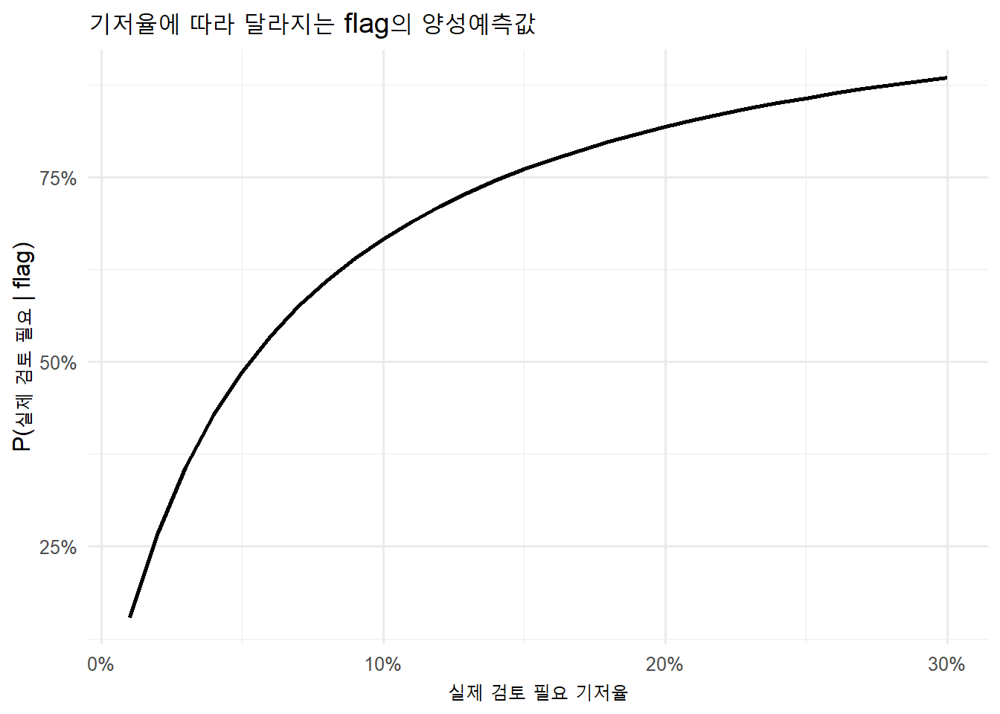
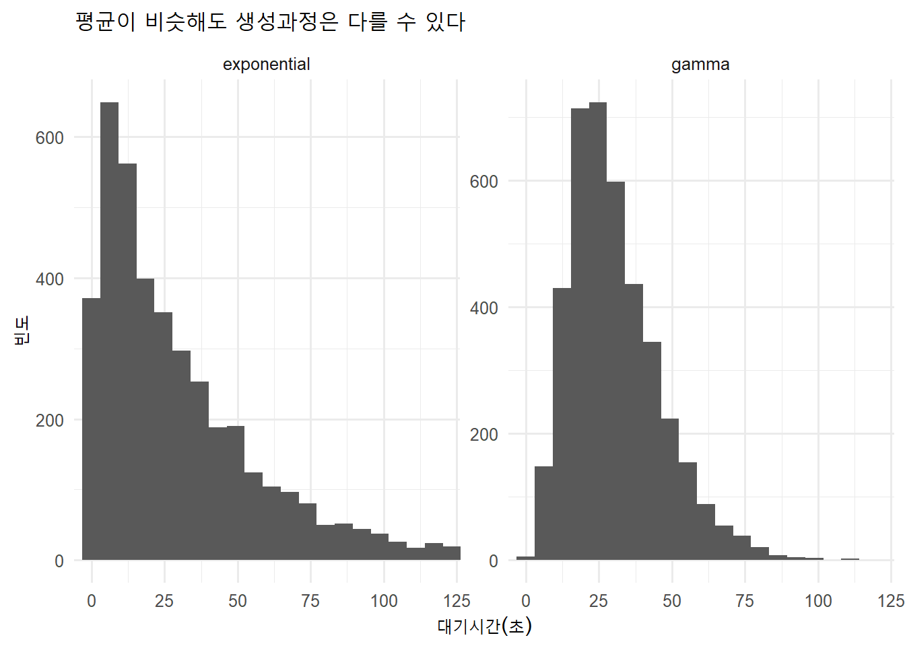
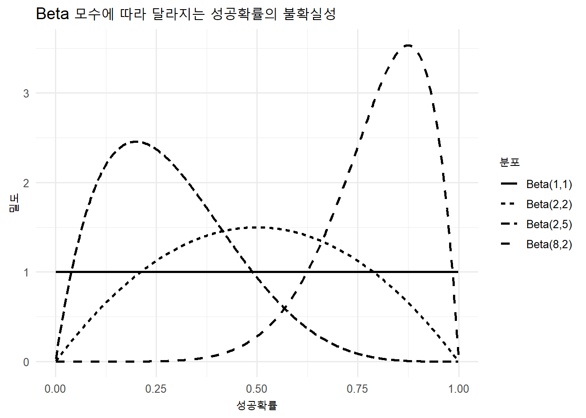
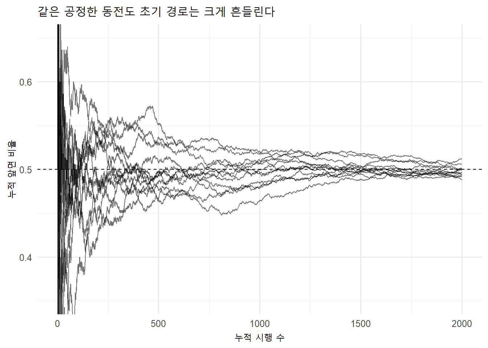
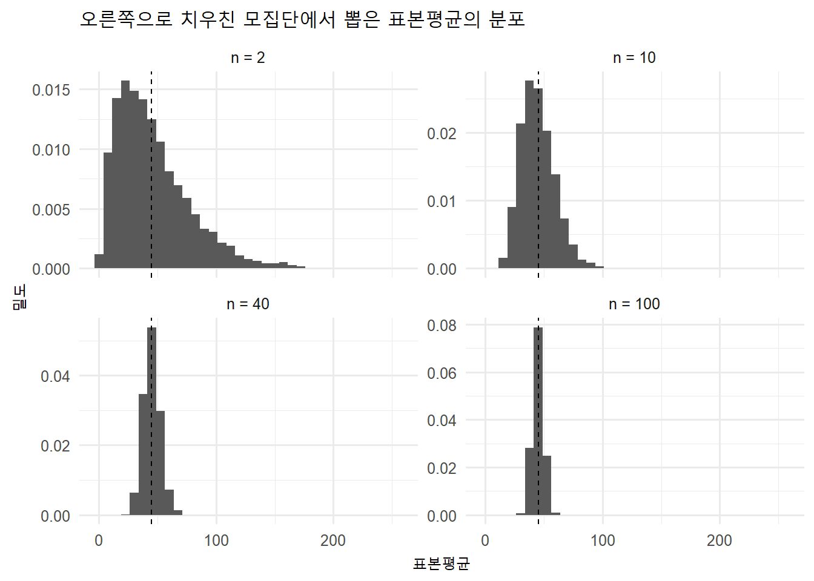
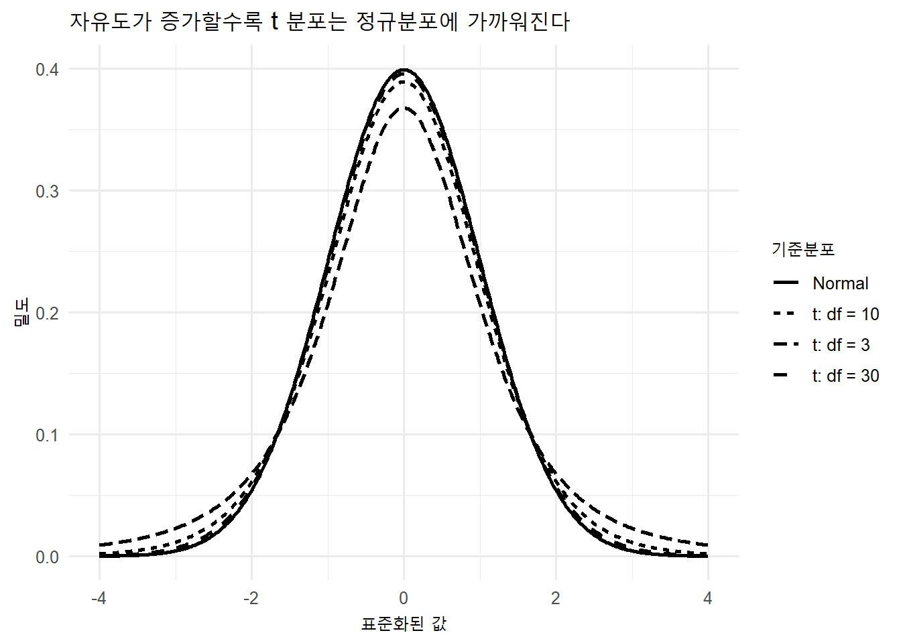
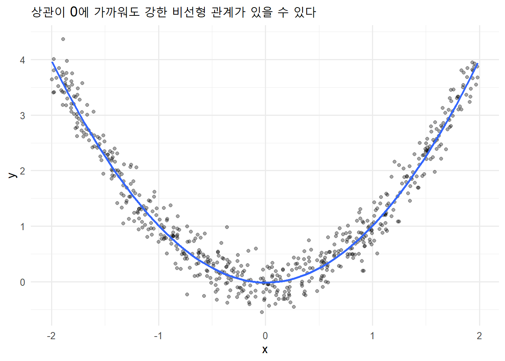

flowchart LR
A["Research Question<br>무엇이 불확실한가?"] --> B["Random Experiment<br>단위와 가능한 결과"]
B --> C["Assumptions<br>독립성·기저율·모수"]
C --> D["Probability Model<br>확률변수와 분포"]
D --> E["Theory or Simulation<br>계산과 반복 실험"]
E --> F["Audit<br>가정·민감도·재현성"]
F --> G["Claim<br>가능한 주장과 한계"]
확률과 데이터 생성과정
불확실성을 시뮬레이션하고 분포로 모델링하기
8주차 학습목표
Note
이번 주 학습을 마치면 다음을 할 수 있어야 합니다.
- 확률을 단순한 공식이 아니라 불확실한 데이터 생성과정(data-generating process)의 모델로 설명한다.
- 표본공간, 사건, 여사건, 합사건, 교사건, 조건부확률을 연구 사례에 적용한다.
- 독립(independence)과 상호배타(mutual exclusivity)를 구분한다.
- 기저율(base rate)을 고려하여 민감도, 위양성률, 양성예측값을 구분한다.
- 확률변수와 확률분포를 자료형과 연구질문에 맞게 연결한다.
- R의
d*,p*,q*,r*함수로 확률 계산, 분위수 탐색, 시뮬레이션을 수행한다. - 대수의 법칙과 중심극한정리를 시뮬레이션으로 확인하고 적용 조건을 설명한다.
- 분포의 모양만 보고 모형을 선택하지 않고, 가정과 생성 메커니즘을 점검한다.
- ChatGPT와 같은 GenAI를 계산기보다 가정 감사자와 시뮬레이션 reviewer로 활용한다.
오늘의 핵심 질문
관측된 데이터가 만들어졌다고 가정하는 확률적 과정은 무엇이며, 그 가정이 바뀌면 결론은 얼마나 달라질까?
Important
확률분포는 데이터에 붙이는 예쁜 곡선이 아닙니다. 어떤 결과가 가능하고, 각 결과가 얼마나 자주 나타날 것이라고 가정하는지를 압축한 연구모형입니다.
이번 주의 GenAI 활용 방식
이번 주에도 다음 순서를 유지합니다.
Attempt → Ask → Simulate → Audit → Explain
| 단계 | 학생이 먼저 할 일 | GenAI에 맡길 수 있는 일 |
|---|---|---|
| Attempt | 실험 단위, 가능한 결과, 관심 사건, 가정을 직접 적는다. | 아직 사용하지 않는다. |
| Ask | 자신의 확률모형과 코드 초안을 제공한다. | 누락된 조건과 대안 모형을 질문하게 한다. |
| Simulate | 이론값을 예측한 뒤 R에서 반복 실험한다. | 최소 재현 코드의 오류 후보를 제안받는다. |
| Audit | 독립성, 기저율, 모수화, 분모, 시드를 점검한다. | reviewer처럼 가정 위반과 과도한 해석을 찾게 한다. |
| Explain | 이론값과 시뮬레이션 차이, 민감도, 주장 한계를 설명한다. | 문장의 조건부 표현과 논리 방향을 비판하게 한다. |
“정답을 계산해 줘” 대신 모형을 감사받기
나는 HCI 연구의 확률모형을 설계하고 있다.
한 메시지가 실제로 사람의 검토를 필요로 할 기저율은 8%이다.
자동 분류기의 민감도는 90%, 위양성률은 5%이다.
내가 알고 싶은 것은 “분류기가 flag한 메시지가 실제로 검토가 필요할 확률”이다.
1. 사건과 조건의 방향을 기호로 먼저 적어라.
2. 필요한 분모와 기저율을 확인하라.
3. 자연빈도 10,000건으로 계산 구조를 보여라.
4. 내가 흔히 혼동할 수 있는 역조건확률을 지적하라.
5. 최종 숫자를 주기 전에 내가 직접 계산할 중간값을 질문하라.
연구자료와 개인정보를 입력하지 않기
실제 사용자 로그, 메시지 내용, IRB 자료, 개인식별자는 공개형 GenAI에 업로드하지 않습니다. 다음만으로도 충분히 검토받을 수 있습니다.
- 합성 또는 비식별 예시 자료
- 변수 정의와 관측단위
- 확률모형의 가정
- 집계된 빈도표
- 최소 재현 코드와 오류 메시지
준비
library(tidyverse)
theme_set(theme_minimal(base_size = 12))
Tip
패키지 설치는 Console에서 한 번 수행하고, 강의자료의 실행 청크에는 library()만 둡니다. 모든 시뮬레이션에는 set.seed()를 사용하여 결과를 재현할 수 있게 합니다.
1. 확률은 무엇을 모델링하는가?
Random experiment, outcome, sample space, event
- 무작위 실험(random experiment): 결과를 미리 확정할 수 없지만 가능한 결과와 절차를 정의할 수 있는 과정
- 결과(outcome): 한 번의 실험에서 실제로 관측된 값
- 표본공간(sample space, \(S\)): 가능한 모든 결과의 집합
- 사건(event, \(A\)): 표본공간의 일부 결과를 묶은 집합
HCI 사례로 바꾸면 다음과 같습니다.
| 연구 상황 | 무작위 실험 | 가능한 결과 | 관심 사건 |
|---|---|---|---|
| 과업 성공 | 사용자가 한 과업을 수행 | 성공, 실패 | 성공 |
| 알림 반응 | 알림 후 10분 관찰 | 클릭, 무시 | 클릭 |
| 오류 로그 | 한 세션의 오류 수 기록 | 0, 1, 2, … | 오류 3회 이상 |
| 응답시간 | 한 시행의 완료시간 측정 | 0보다 큰 실수 | 60초 이내 완료 |
고전적 확률 공식의 적용 조건
유한한 표본공간의 모든 결과가 동일하게 가능(equally likely)할 때만 다음 공식을 그대로 쓸 수 있습니다.
\[ P(A)=\frac{|A|}{|S|} \]
Warning
현실의 사용자 행동은 대개 모든 결과가 동일하게 가능하지 않습니다. “경우의 수를 센다”보다 각 결과에 어떤 확률을 부여할지가 더 중요한 경우가 많습니다.
두 개의 주사위로 사건 만들기
two_dice <- crossing(
die_1 = 1:6,
die_2 = 1:6
) |>
mutate(
total = die_1 + die_2,
event_a = total >= 9,
event_b = die_1 %% 2 == 0
)
two_dice# A tibble: 36 × 5
die_1 die_2 total event_a event_b
<int> <int> <int> <lgl> <lgl>
1 1 1 2 FALSE FALSE
2 1 2 3 FALSE FALSE
3 1 3 4 FALSE FALSE
4 1 4 5 FALSE FALSE
5 1 5 6 FALSE FALSE
6 1 6 7 FALSE FALSE
7 2 1 3 FALSE TRUE
8 2 2 4 FALSE TRUE
9 2 3 5 FALSE TRUE
10 2 4 6 FALSE TRUE
# ℹ 26 more rows- \(A\): 두 주사위 합이 9 이상
- \(B\): 첫 번째 주사위가 짝수
two_dice |>
summarise(
total_outcomes = n(),
p_a = mean(event_a),
p_b = mean(event_b),
p_a_and_b = mean(event_a & event_b),
p_a_or_b = mean(event_a | event_b),
p_a_given_b = mean(event_a[event_b])
)# A tibble: 1 × 6
total_outcomes p_a p_b p_a_and_b p_a_or_b p_a_given_b
<int> <dbl> <dbl> <dbl> <dbl> <dbl>
1 36 0.278 0.5 0.167 0.611 0.333확률의 기본 규칙
\[ 0 \le P(A) \le 1, \qquad P(S)=1 \]
여사건(complement)
\[ P(A^c)=1-P(A) \]
덧셈 법칙(addition rule)
\[ P(A\cup B)=P(A)+P(B)-P(A\cap B) \]
곱셈 법칙(multiplication rule)
\[ P(A\cap B)=P(A)P(B\mid A) \]
독립인 경우에만 다음처럼 단순해집니다.
\[ P(A\cap B)=P(A)P(B) \]
독립과 상호배타는 다르다
| 개념 | 의미 | 핵심 식 |
|---|---|---|
| 상호배타 | 두 사건이 동시에 일어날 수 없음 | \(P(A\cap B)=0\) |
| 독립 | 한 사건의 발생이 다른 사건의 확률을 바꾸지 않음 | \(P(A\mid B)=P(A)\) |
확률이 0이 아닌 두 사건이 상호배타라면, 한 사건이 발생했을 때 다른 사건은 불가능해집니다. 따라서 두 사건은 독립이 아닙니다.
사용자가 voice 또는 text 인터페이스 중 하나만 배정받는 연구에서 “voice 조건”과 “text 조건”은 상호배타인가요? 독립인가요? 답을 말하기 전에 두 정의를 각각 적용해 보세요.
2. 조건부확률과 기저율
조건의 방향을 먼저 읽기
\[ P(A\mid B)=\frac{P(A\cap B)}{P(B)} \]
- \(P(\text{flag}\mid\text{실제 위험})\): 실제 위험한 항목 중 flag되는 비율, 즉 민감도
- \(P(\text{실제 위험}\mid\text{flag})\): flag된 항목 중 실제 위험한 비율, 즉 양성예측값
두 확률은 일반적으로 같지 않습니다.
HCI 사례: AI 콘텐츠 분류기의 flag를 믿어도 될까?
가정:
- 실제로 사람의 검토가 필요한 메시지: 8%
- 민감도: 90%
- 위양성률: 5%
확률보다 자연빈도(natural frequencies)로 먼저 계산해 봅시다.
n_messages <- 10000
base_rate <- 0.08
sensitivity <- 0.90
false_positive_rate <- 0.05
bayes_table <- tibble(
actual_state = c("needs_review", "does_not_need_review"),
messages = c(
n_messages * base_rate,
n_messages * (1 - base_rate)
),
flag_rate = c(sensitivity, false_positive_rate)
) |>
mutate(
flagged = messages * flag_rate,
not_flagged = messages - flagged
)
bayes_table# A tibble: 2 × 5
actual_state messages flag_rate flagged not_flagged
<chr> <dbl> <dbl> <dbl> <dbl>
1 needs_review 800 0.9 720 80
2 does_not_need_review 9200 0.05 460 8740true_flagged <- bayes_table |>
filter(actual_state == "needs_review") |>
pull(flagged)
all_flagged <- sum(bayes_table$flagged)
positive_predictive_value <- true_flagged / all_flagged
positive_predictive_value[1] 0.6101695민감도가 90%여도 flag의 정확도가 90%인 것은 아닙니다. 검토가 필요하지 않은 메시지가 훨씬 많기 때문에, 5%의 위양성도 전체 flag에서 큰 몫을 차지할 수 있습니다.
Bayes’ theorem
\[ P(A\mid B)=\frac{P(B\mid A)P(A)}{P(B)} \]
현재 사례에서는 다음과 같습니다.
\[ P(\text{위험}\mid\text{flag}) = \frac{P(\text{flag}\mid\text{위험})P(\text{위험})} {P(\text{flag})} \]
시뮬레이션으로 확인하기
set.seed(2026)
n_sim <- 100000
truth <- rbinom(n_sim, size = 1, prob = base_rate)
flag <- if_else(
truth == 1,
rbinom(n_sim, size = 1, prob = sensitivity),
rbinom(n_sim, size = 1, prob = false_positive_rate)
)
mean(truth[flag == 1] == 1)[1] 0.6153523
GenAI checkpoint: 조건 방향 감사
AI에게 숫자만 확인시키지 말고 다음을 요구하세요.
내 계산에서 P(flag | actual)과 P(actual | flag)를 혼동했는지 감사하라.
각 확률의 분모를 자연어와 빈도표로 적고,
기저율이 2%, 8%, 20%일 때 결론이 어떻게 바뀌는지 민감도 분석을 제안하라.기저율 민감도 분석
base_rate_sensitivity <- tibble(
base_rate = seq(0.01, 0.30, by = 0.01)
) |>
mutate(
ppv = sensitivity * base_rate /
(
sensitivity * base_rate +
false_positive_rate * (1 - base_rate)
)
)
base_rate_sensitivity |>
ggplot(aes(base_rate, ppv)) +
geom_line(linewidth = 1) +
scale_x_continuous(labels = scales::label_percent()) +
scale_y_continuous(labels = scales::label_percent()) +
labs(
title = "기저율에 따라 달라지는 flag의 양성예측값",
x = "실제 검토 필요 기저율",
y = "P(실제 검토 필요 | flag)"
)
3. 시뮬레이션은 확률적 사고의 실험실이다
이론값과 Monte Carlo 추정값
AI 인터페이스가 한 과업을 성공할 확률이 0.9라고 가정합시다. 8개 과업 중 7개 이상 성공할 확률은 얼마일까요?
theoretical_probability <- pbinom(
q = 6,
size = 8,
prob = 0.9,
lower.tail = FALSE
)
theoretical_probability[1] 0.8131047set.seed(2026)
simulated_successes <- rbinom(
n = 100000,
size = 8,
prob = 0.9
)
simulated_probability <- mean(simulated_successes >= 7)
c(
theoretical = theoretical_probability,
simulation = simulated_probability
)theoretical simulation
0.8131047 0.8105800 시뮬레이션은 이론을 대체하기보다 다음에 유용합니다.
- 손으로 계산하기 어려운 복합 문제
- 분석 코드의 검산
- 가정 변화에 대한 민감도 분석
- 표집변동을 직관적으로 이해하기
- 통계적 방법의 장기적 성질 확인
Warning
한 번의 시뮬레이션 결과는 정답이 아닙니다. 반복 횟수, 난수 시드, 모형의 가정을 함께 기록해야 합니다.
4. 확률변수와 분포
확률변수는 결과를 숫자로 연결하는 함수다
확률변수(random variable)는 무작위 실험의 결과를 수치로 표현합니다.
| HCI 결과 | 확률변수 | 유형 |
|---|---|---|
| 과업 성공 여부 | 성공 = 1, 실패 = 0 | 이산·이진 |
| 세션당 오류 수 | 0, 1, 2, … | 이산·계수 |
| 완료시간 | 0보다 큰 실수 | 연속·양수 |
| 클릭률 | 0과 1 사이 | 비율 또는 이항 결과의 요약 |
| 1–7 신뢰 점수 | 1, 2, …, 7 | 이산·순서형 |
베르누이와 이항분포를 구분하기
한 번의 성공/실패 시행:
\[ X\sim\text{Bernoulli}(p), \qquad P(X=x)=p^x(1-p)^{1-x},\;x\in\{0,1\} \]
동일한 성공확률을 가진 독립 시행을 \(n\)번 반복했을 때 성공 횟수:
\[ X\sim\text{Binomial}(n,p), \qquad P(X=k)=\binom{n}{k}p^k(1-p)^{n-k} \]
Important
이항분포를 쓰려면 “성공/실패”라는 결과만으로 충분하지 않습니다. 고정된 시행 수, 시행 간 독립성, 일정한 성공확률이라는 가정도 필요합니다.
PMF, PDF, CDF
- PMF (probability mass function): 이산확률변수의 각 값에 확률을 부여
- PDF (probability density function): 연속확률변수의 밀도; 한 점의 높이 자체는 확률이 아님
- CDF (cumulative distribution function): \(F(x)=P(X\le x)\)
연속확률변수에서는 일반적으로 다음이 성립합니다.
\[ P(X=x)=0, \qquad P(a\le X\le b)=\int_a^b f(x)\,dx \]
R 분포 함수의 공통 문법: d, p, q, r
| 접두사 | 질문 | 이항분포 예 | 정규분포 예 |
|---|---|---|---|
d |
특정 값의 질량 또는 밀도는? | dbinom() |
dnorm() |
p |
이 값 이하의 누적확률은? | pbinom() |
pnorm() |
q |
이 누적확률에 해당하는 분위수는? | qbinom() |
qnorm() |
r |
이 분포에서 무작위 값을 생성하면? | rbinom() |
rnorm() |
# 정확히 7번 성공할 확률
dbinom(7, size = 8, prob = 0.9)[1] 0.3826375# 7번 이하 성공할 누적확률
pbinom(7, size = 8, prob = 0.9)[1] 0.5695328# 누적확률 95%가 되는 성공 횟수
qbinom(0.95, size = 8, prob = 0.9)[1] 8# 같은 실험을 10회 시뮬레이션
set.seed(2026)
rbinom(10, size = 8, prob = 0.9) [1] 7 7 8 8 7 8 7 6 8 7# 평균 50, 표준편차 10인 정규분포
dnorm(50, mean = 50, sd = 10)[1] 0.03989423pnorm(60, mean = 50, sd = 10)[1] 0.8413447qnorm(0.975, mean = 50, sd = 10)[1] 69.59964set.seed(2026)
rnorm(5, mean = 50, sd = 10)[1] 55.20589 39.20309 51.39238 49.15251 43.33360pnorm(60, 50, 10)과 1 - pnorm(60, 50, 10)은 각각 어떤 사건의 확률인가요? 코드를 실행하기 전에 자연어로 써 보세요.
5. 분포는 모양이 아니라 생성 가정으로 선택한다
| 분포 | 전형적인 결과 | 핵심 가정 또는 모수 | HCI 예시 | 주의할 점 |
|---|---|---|---|---|
| Bernoulli | 한 번의 0/1 결과 | 성공확률 \(p\) | 한 과업의 성공 | 반복자료의 의존성 |
| Binomial | \(n\)번 중 성공 횟수 | 고정 \(n\), 독립, 일정한 \(p\) | 10개 알림 중 클릭 수 | 사용자마다 \(p\)가 다를 수 있음 |
| Poisson | 단위 노출당 사건 수 | 일정한 rate, 평균≈분산 | 시간당 오류 수 | 과산포면 negative binomial 고려 |
| Normal | 대칭적 연속값 | 평균 \(\mu\), 표준편차 \(\sigma\) | 합성 척도 점수의 근사 | 양수·비대칭 자료에 자동 적용 금지 |
| Lognormal / Gamma | 양수이고 오른쪽으로 긴 값 | 위치·shape·rate/scale | 완료시간, 체류시간 | rate와 scale 혼동 주의 |
| Exponential | 첫 사건까지의 대기시간 | 일정 rate, memoryless | 다음 오류까지 시간 | 위험률이 일정해야 함 |
| Beta | 0과 1 사이의 연속 모수 | shape \(\alpha,\beta\) | 불확실한 성공확률 | 관측 성공횟수 자체는 이항모형이 자연스러움 |
| Student’s t | 표준화된 추정량 | 자유도 | 평균 추론의 기준분포 | 단순히 “작은 표본용 데이터 분포”가 아님 |
| \(\chi^2\), F | 제곱합·분산비에서 유도 | 자유도 | 분산·ANOVA 기준분포 | 원자료 모양과 동일시하지 않기 |
Poisson 가정 감사
세션당 오류 수에 Poisson 모형을 고려한다고 합시다.
set.seed(2026)
error_counts <- rpois(500, lambda = 2.5)
c(
mean = mean(error_counts),
variance = var(error_counts)
) mean variance
2.422000 2.296509 실제 자료에서 분산이 평균보다 훨씬 크다면 사용자 간 이질성, 시간대 효과, 오류 군집화가 있을 수 있습니다. 이 경우 Poisson의 일정한 rate 가정이 맞지 않을 수 있습니다.
양수·비대칭 자료: 지수분포와 감마분포
set.seed(2026)
waiting_time <- tibble(
exponential = rexp(4000, rate = 1 / 30),
gamma = rgamma(4000, shape = 4, rate = 4 / 30)
) |>
pivot_longer(
everything(),
names_to = "distribution",
values_to = "seconds"
)
waiting_time |>
ggplot(aes(seconds)) +
geom_histogram(bins = 45) +
facet_wrap(~distribution, scales = "free_y") +
coord_cartesian(xlim = c(0, 120)) +
labs(
title = "평균이 비슷해도 생성과정은 다를 수 있다",
x = "대기시간(초)",
y = "빈도"
)
지수분포는 첫 사건까지의 대기시간과 memoryless 가정을 나타냅니다. 감마분포는 여러 단계가 누적된 양의 대기시간을 더 유연하게 표현할 수 있습니다.
Beta 분포의 올바른 해석
Beta(2, 5)의 2와 5는 분포 모양을 정하는 shape parameters입니다. 이를 곧바로 실제 “성공 2번, 실패 5번”이라고 단정하면 안 됩니다. Beta–Binomial 갱신에서는 관측 성공·실패 횟수가 각각 \(\alpha\), \(\beta\)에 더해지지만, prior를 가상자료로 설명할 때는 기준 prior와 관례에 따라 \(\alpha\), \(\beta\) 또는 \(\alpha-1\), \(\beta-1\)을 pseudo-count처럼 해석하기도 합니다. 따라서 어떤 관례를 사용했는지 명시해야 합니다.
beta_shapes <- crossing(
probability = seq(0.001, 0.999, length.out = 500),
prior = c("Beta(1,1)", "Beta(2,2)", "Beta(2,5)", "Beta(8,2)")
) |>
mutate(
alpha = case_when(
prior == "Beta(1,1)" ~ 1,
prior == "Beta(2,2)" ~ 2,
prior == "Beta(2,5)" ~ 2,
TRUE ~ 8
),
beta = case_when(
prior == "Beta(1,1)" ~ 1,
prior == "Beta(2,2)" ~ 2,
prior == "Beta(2,5)" ~ 5,
TRUE ~ 2
),
density = dbeta(probability, alpha, beta)
)
beta_shapes |>
ggplot(aes(probability, density, linetype = prior)) +
geom_line(linewidth = 0.9) +
labs(
title = "Beta 모수에 따라 달라지는 성공확률의 불확실성",
x = "성공확률",
y = "밀도",
linetype = "분포"
)
GenAI checkpoint: 분포 선택 reviewer
다음 변수에 후보 분포를 하나만 단정하지 말고 2–3개 제안하라.
각 후보마다 지지되는 데이터 생성 가정, 확인할 진단, 가정이 깨질 때 생기는 문제를 표로 비교하라.
변수: 모바일 과업완료시간, 사용자별 반복측정, 0초는 불가능, 오른쪽 꼬리가 길다.
단순히 히스토그램 모양이 비슷하다는 이유는 사용하지 말라.6. 기대값과 분산
기대값은 장기적 평균이지 반드시 가능한 결과는 아니다
공정한 주사위의 기대값은 다음과 같습니다.
\[ E(X)=\sum_x xP(X=x)=3.5 \]
그러나 한 번의 주사위에서 3.5가 나오지는 않습니다.
die_outcomes <- 1:6
probabilities <- rep(1 / 6, 6)
expected_value <- sum(die_outcomes * probabilities)
variance <- sum((die_outcomes - expected_value)^2 * probabilities)
c(
expected_value = expected_value,
variance = variance,
standard_deviation = sqrt(variance)
) expected_value variance standard_deviation
3.500000 2.916667 1.707825 확률변수 \(X\)의 분산은 다음과 같습니다.
\[ \mathrm{Var}(X)=E\left[(X-E(X))^2\right] \]
- 기대값: 반복했을 때 중심이 어디에 있는가?
- 분산: 결과가 그 중심 주위에서 얼마나 흔들리는가?
7. 대수의 법칙: 반복하면 추정값은 안정된다
대수의 법칙(Law of Large Numbers)은 시행 수가 늘어날수록 표본평균이나 표본비율이 기대값에 가까워지는 성질을 설명합니다.
set.seed(2026)
coin_paths <- tibble(path = factor(1:12)) |>
mutate(
trajectory = map(
path,
function(path_id) {
flips <- rbinom(2000, size = 1, prob = 0.5)
tibble(
n = seq_along(flips),
running_proportion = cumsum(flips) / n
)
}
)
) |>
unnest(trajectory)
coin_paths |>
ggplot(aes(n, running_proportion, group = path)) +
geom_line(alpha = 0.55) +
geom_hline(yintercept = 0.5, linetype = "dashed") +
coord_cartesian(ylim = c(0.35, 0.65)) +
labs(
title = "같은 공정한 동전도 초기 경로는 크게 흔들린다",
x = "누적 시행 수",
y = "누적 앞면 비율"
)
Important
시행 수가 커지면 추정값의 변동이 줄어든다는 뜻이지, 표본이 크면 편향된 수집과 잘못된 측정이 자동으로 해결된다는 뜻은 아닙니다.
8. 중심극한정리와 표집분포
원자료의 분포와 표본평균의 분포는 다르다
중심극한정리(Central Limit Theorem)는 적절한 조건에서 표본크기가 커질수록 표준화된 표본평균의 표집분포가 정규분포에 가까워짐을 말합니다.
\[ \frac{\bar X-\mu}{\sigma/\sqrt{n}} \xrightarrow{d}N(0,1) \]
이 정리는 “원자료가 정규분포가 된다”는 뜻이 아닙니다.
set.seed(2026)
clt_demo <- crossing(
sample_size = c(2L, 10L, 40L, 100L),
simulation = 1:4000
) |>
mutate(
sample_mean = map_dbl(
sample_size,
function(n_i) mean(rexp(n_i, rate = 1 / 45))
),
sample_size = factor(
sample_size,
levels = c(2, 10, 40, 100),
labels = c("n = 2", "n = 10", "n = 40", "n = 100")
)
)
clt_demo |>
ggplot(aes(sample_mean)) +
geom_histogram(aes(y = after_stat(density)), bins = 35) +
geom_vline(xintercept = 45, linetype = "dashed") +
facet_wrap(~sample_size, scales = "free_y") +
labs(
title = "오른쪽으로 치우친 모집단에서 뽑은 표본평균의 분포",
x = "표본평균",
y = "밀도"
)
표준오차 확인
지수분포의 평균과 표준편차가 모두 45라면, 표본평균의 이론적 표준오차는 \(45/\sqrt{n}\)입니다.
clt_demo |>
mutate(sample_size_numeric = as.integer(str_extract(sample_size, "\\d+"))) |>
summarise(
empirical_mean = mean(sample_mean),
empirical_se = sd(sample_mean),
theoretical_se = 45 / sqrt(first(sample_size_numeric)),
.by = sample_size
)# A tibble: 4 × 4
sample_size empirical_mean empirical_se theoretical_se
<fct> <dbl> <dbl> <dbl>
1 n = 2 46.3 31.7 31.8
2 n = 10 44.7 14.3 14.2
3 n = 40 45.0 7.14 7.12
4 n = 100 44.9 4.53 4.5 중심극한정리 적용 전 점검
- 관측치가 독립이거나 의존성이 충분히 약한가?
- 모집단 분산이 유한한가?
- 극단적으로 두꺼운 꼬리나 희귀사건이 있는가?
- 반복측정·군집자료인데 행을 독립 표본처럼 취급하지 않았는가?
- 관심 통계량이 평균인가, 다른 비선형 통계량인가?
Warning
“\(n=30\)이면 무조건 정규근사가 가능하다”는 보편 법칙은 없습니다. 필요한 표본크기는 원분포의 비대칭, 꼬리, 의존성, 관심 통계량에 따라 달라집니다.
9. 추론으로 이어지는 기준분포
t, \(\chi^2\), F 분포는 흔히 원자료를 직접 표현하기보다 추정량과 검정통계량이 반복표집에서 어떻게 변하는지를 나타내는 기준분포로 등장합니다.
Student’s t distribution
모집단 표준편차를 모르고 표본표준편차로 표준오차를 추정하면 추가 불확실성이 생깁니다. t 분포는 이를 더 두꺼운 꼬리로 반영합니다. 자유도가 커질수록 표준정규분포에 가까워집니다.
t_reference <- crossing(
x = seq(-4, 4, length.out = 500),
distribution = c("t: df = 3", "t: df = 10", "t: df = 30", "Normal")
) |>
mutate(
density = case_when(
distribution == "t: df = 3" ~ dt(x, df = 3),
distribution == "t: df = 10" ~ dt(x, df = 10),
distribution == "t: df = 30" ~ dt(x, df = 30),
TRUE ~ dnorm(x)
)
)
t_reference |>
ggplot(aes(x, density, linetype = distribution)) +
geom_line(linewidth = 0.9) +
labs(
title = "자유도가 증가할수록 t 분포는 정규분포에 가까워진다",
x = "표준화된 값",
y = "밀도",
linetype = "기준분포"
)
\(\chi^2\) and F distributions
- \(\chi^2\) 분포: 독립 표준정규변수의 제곱합에서 나타나며 분산과 범주형 빈도 검정에 연결됩니다.
- F 분포: 독립적인 분산 추정량의 비율에서 나타나며 ANOVA와 회귀의 omnibus test에 연결됩니다.
- 두 분포 모두 자유도에 따라 모양이 달라지고 오른쪽으로 치우칩니다.
Important
ANOVA에서 F 통계량을 사용한다는 사실은 “원자료가 F 분포를 따른다”거나 “ANOVA가 단순히 집단의 분산 차이를 검정한다”는 뜻이 아닙니다. F는 평균모형이 설명한 변동과 잔차변동을 비교하는 검정통계량의 기준분포입니다.
10. 상관은 의존성 전체를 요약하지 않는다
Pearson 상관계수는 두 변수의 선형 관계를 요약합니다.
set.seed(2026)
nonlinear_data <- tibble(
x = runif(600, min = -2, max = 2),
y = x^2 + rnorm(600, mean = 0, sd = 0.25)
)
nonlinear_data |>
summarise(
pearson = cor(x, y, method = "pearson"),
spearman = cor(x, y, method = "spearman")
)# A tibble: 1 × 2
pearson spearman
<dbl> <dbl>
1 -0.0558 -0.0537nonlinear_data |>
ggplot(aes(x, y)) +
geom_point(alpha = 0.35) +
geom_smooth(method = "loess", se = FALSE, linewidth = 1) +
labs(
title = "상관이 0에 가까워도 강한 비선형 관계가 있을 수 있다",
x = "x",
y = "y"
)`geom_smooth()` using formula = 'y ~ x'
상관 해석의 최소 조건
- 산점도를 먼저 확인한다.
- 극단값과 범위 제한을 확인한다.
- Pearson은 선형관계, Spearman은 단조관계를 요약한다.
- 상관 0은 일반적인 독립을 의미하지 않는다.
- 상관은 인과관계를 뜻하지 않는다.
- 같은 참여자의 반복 관측을 모두 독립 점처럼 계산하면 상관이 왜곡될 수 있다.
11. Probability Model Audit Lab
과제
다음 중 하나를 선택합니다.
- AI 콘텐츠 분류기의 flag 정확도
- 10개 과업 중 성공 횟수
- 한 시간 동안 발생한 오류 수
- 다음 사용자 행동까지의 대기시간
- A/B 인터페이스의 클릭확률
Round 1. Human first
GenAI 없이 먼저 작성합니다.
- 무작위 실험과 관측단위
- 가능한 결과와 관심 사건
- 확률변수와 값의 범위
- 후보 분포
- 핵심 모수
- 독립성·일정한 rate·기저율 등의 가정
- 계산하고 싶은 확률 또는 분위수
Round 2. Theory and simulation
d*,p*,q*,r*중 필요한 함수를 선택합니다.- 이론값을 계산합니다.
- 최소 10,000회 시뮬레이션으로 검산합니다.
- 시드를 기록합니다.
- 이론값과 시뮬레이션값의 차이를 설명합니다.
Round 3. Assumption sensitivity
최소 하나의 핵심 가정을 바꿉니다.
- 기저율
- 성공확률
- 사건발생률
- 독립성
- 표본크기
- 분포의 꼬리 또는 비대칭
결론이 얼마나 달라지는지 표나 그래프로 제시합니다.
Round 4. AI audit
아래 확률모형과 R 코드를 reviewer처럼 감사하라.
1. 사건과 조건의 방향
2. 관측단위와 독립성
3. 선택한 분포의 생성 가정
4. d/p/q/r 함수의 의미
5. 시뮬레이션 반복 수와 seed
6. 민감도 분석에서 빠진 중요한 가정
7. 결과로 말할 수 없는 주장
완성 코드를 새로 쓰지 말고 우선 진단 질문을 제시하라.Probability Claim Card
| 항목 | 작성 내용 |
|---|---|
| Question | 어떤 불확실성을 수량화했는가? |
| Unit | 한 번의 실험 또는 관측은 무엇인가? |
| Model | 어떤 확률변수와 분포를 사용했는가? |
| Assumptions | 독립성, 기저율, 모수에 어떤 가정을 했는가? |
| Evidence | 이론 계산과 시뮬레이션은 얼마나 일치했는가? |
| Sensitivity | 핵심 가정이 바뀌면 결론은 어떻게 달라졌는가? |
| Boundary | 현재 모형으로 말할 수 없는 것은 무엇인가? |
AI Collaboration Log
| 항목 | 기록 내용 |
|---|---|
| 목적 | 개념 설명, 코드 디버깅, 가정 감사 등 |
| 내가 먼저 한 시도 | AI 사용 전 정의·계산·예측 |
| 프롬프트 | 실제 입력한 핵심 요청 |
| AI 제안 | 제안 내용 요약 |
| 검증 | R로 확인한 계산과 출력 |
| 결정 | 채택·수정·기각과 이유 |
| 최종 변화 | 모형 또는 해석이 어떻게 달라졌는가? |
이번 주의 한 문장
확률모형의 품질은 공식의 복잡성보다, 데이터가 생성되는 과정을 얼마나 정직하게 표현하고 가정을 얼마나 투명하게 검토했는지에 달려 있습니다.